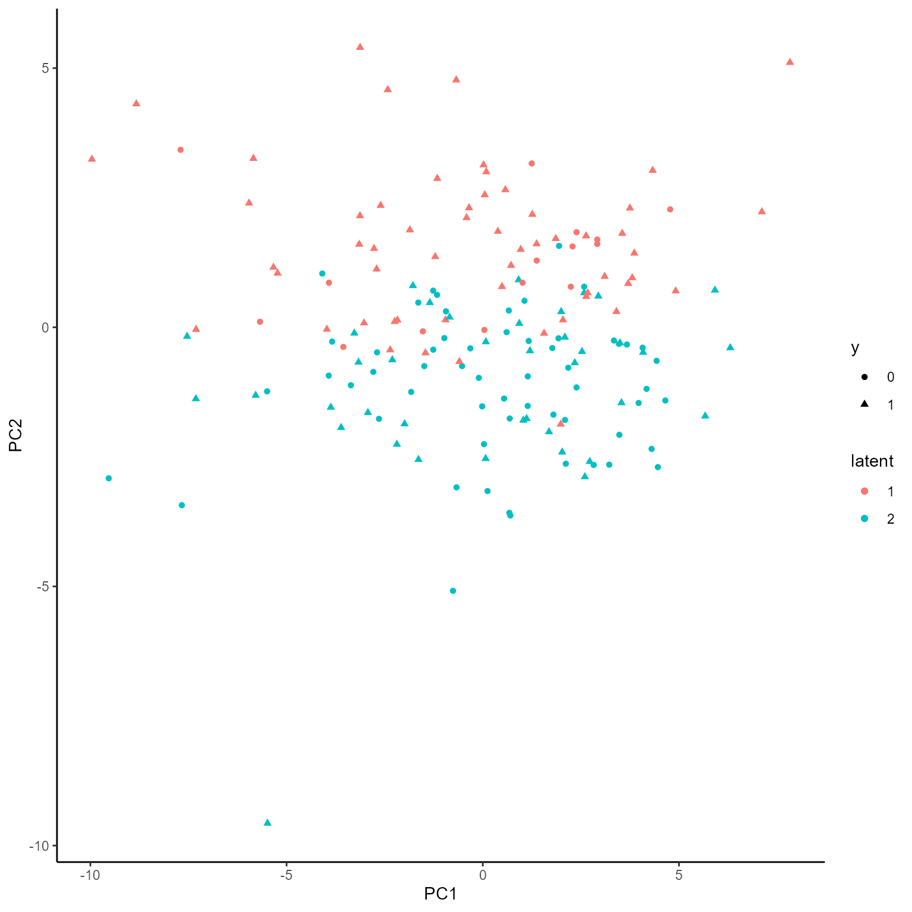
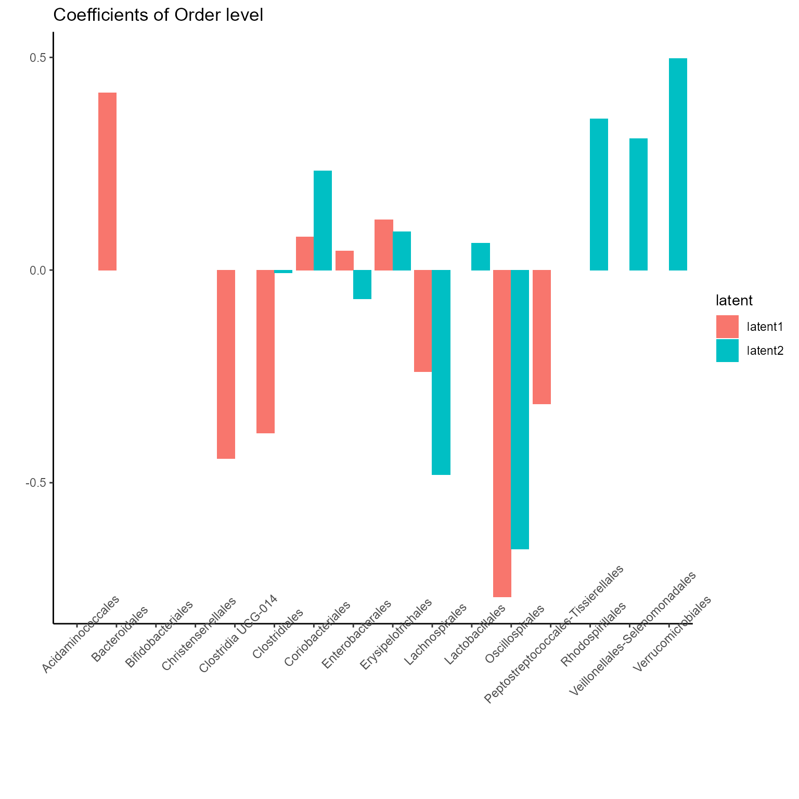
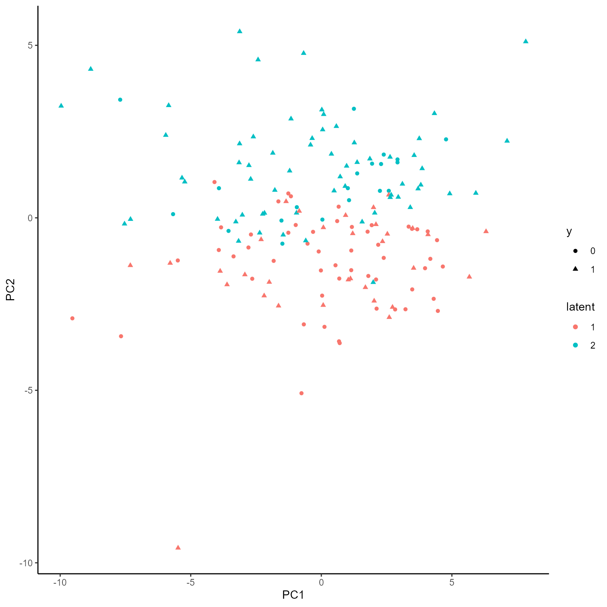
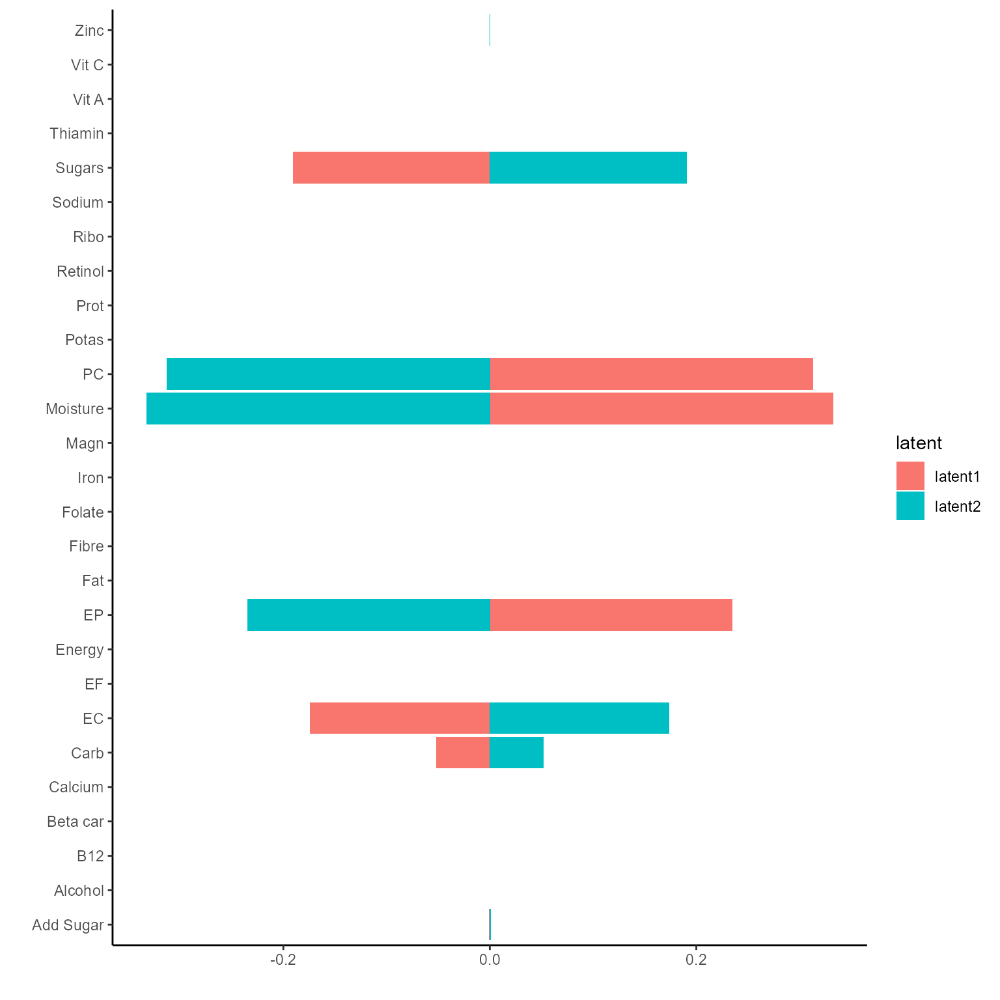
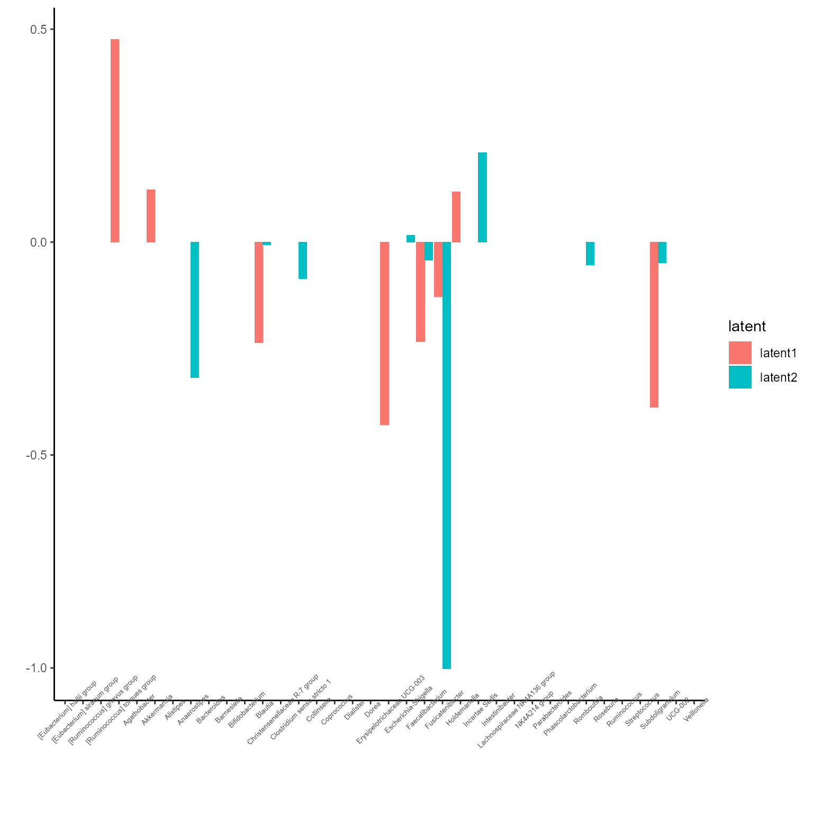
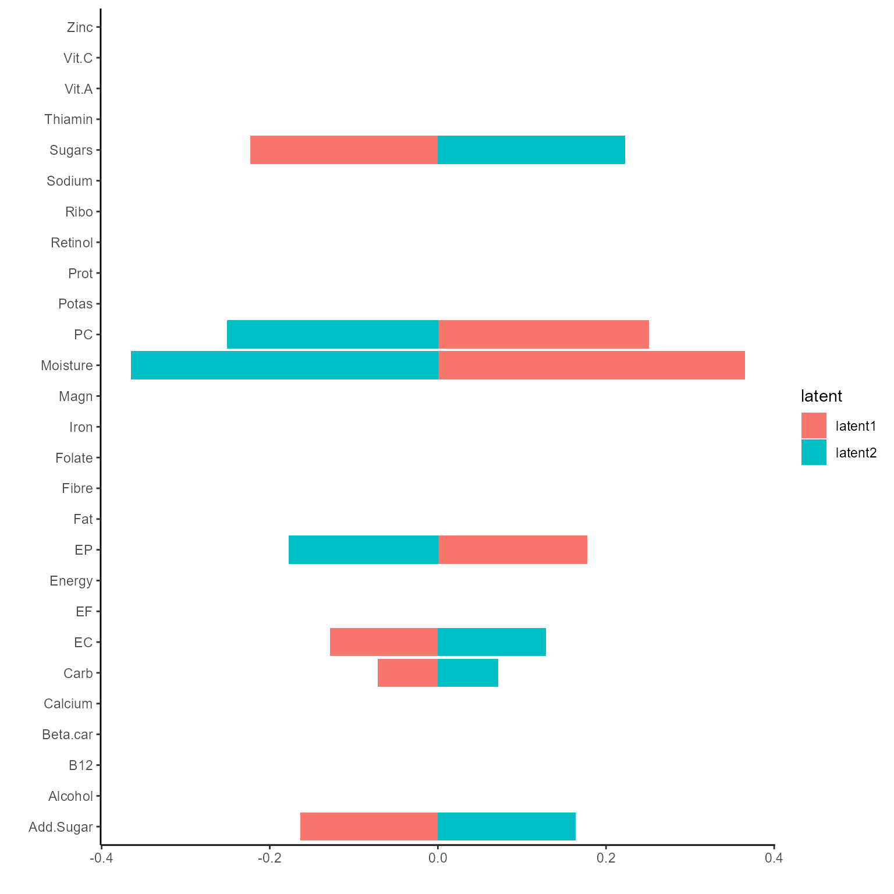
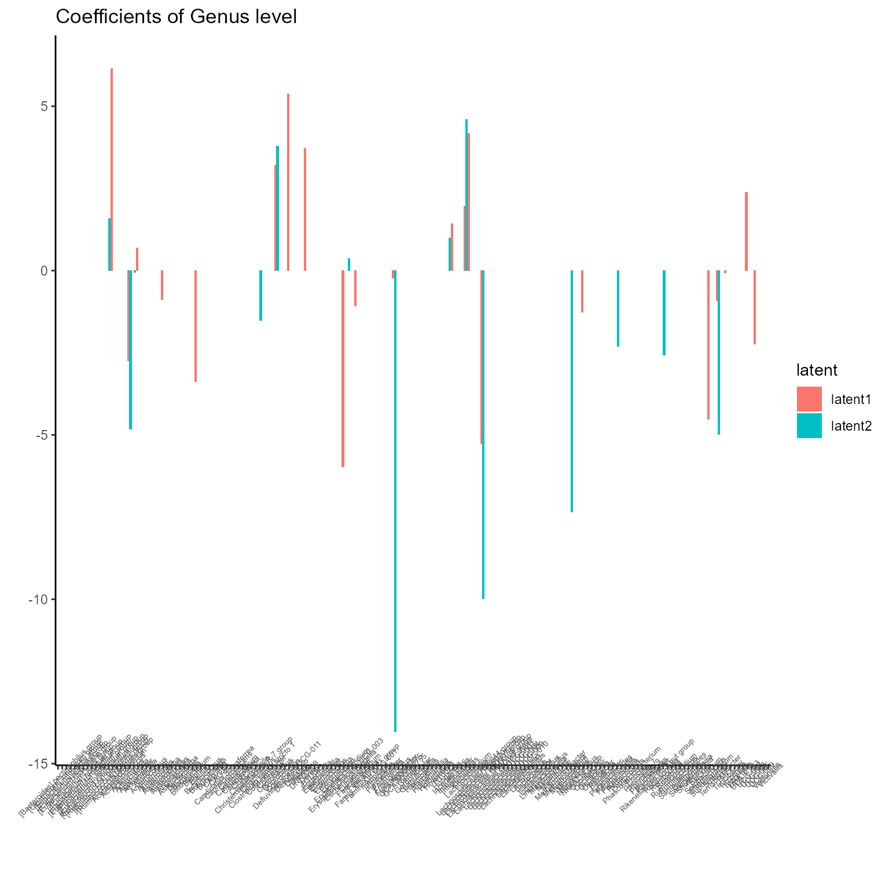
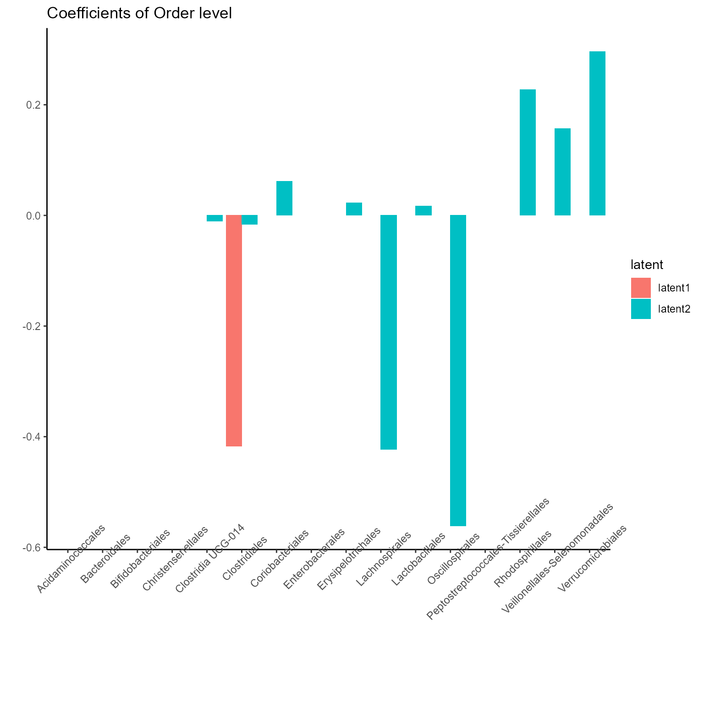
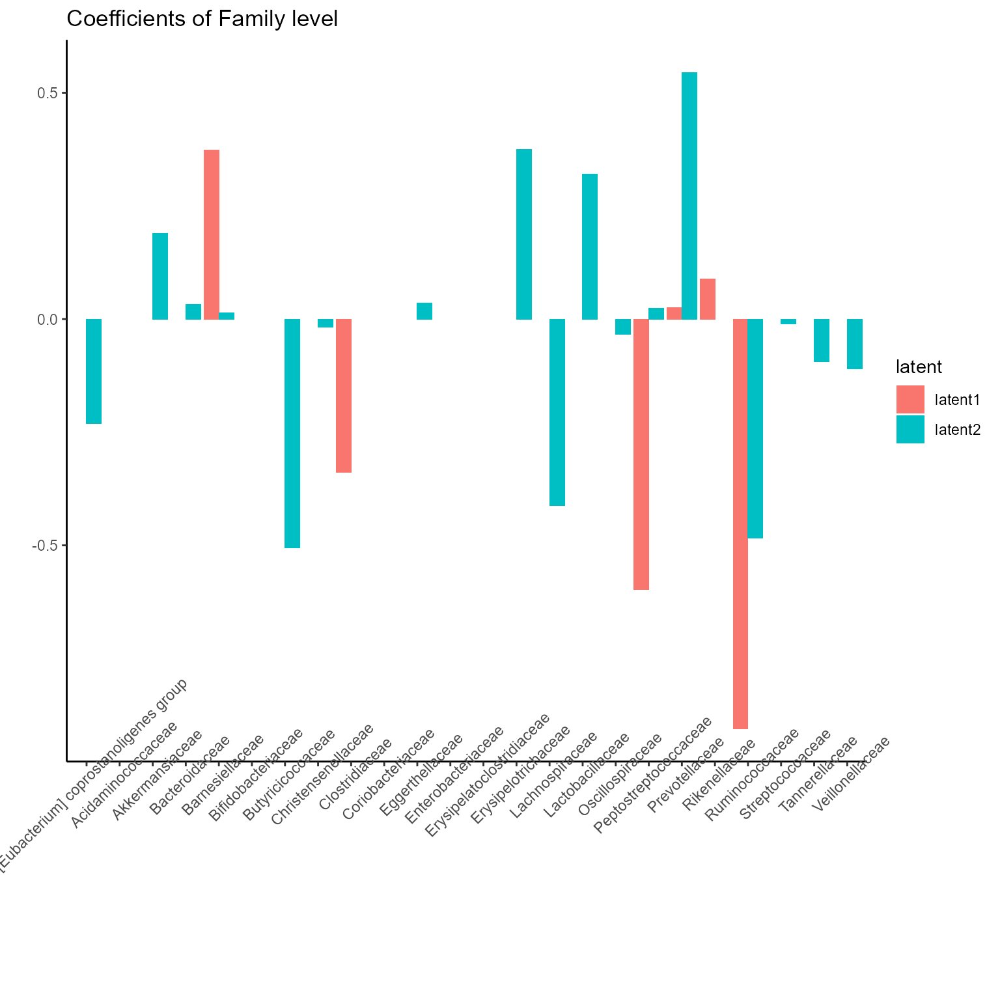
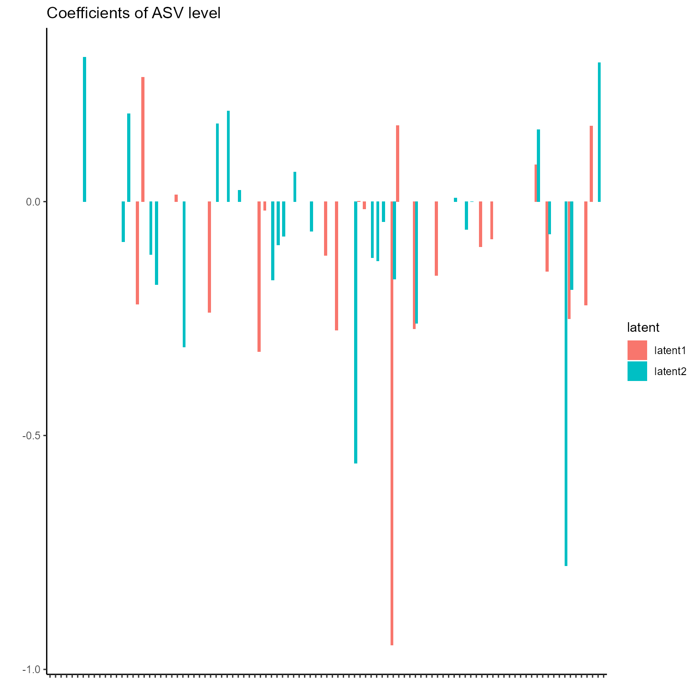

Getting started: NEMoE
NEMoE.RmdIntroduction
Nutrition-Enterotype Mixture of Expert Model(NEMoE) is an R package that facilitates discover latent classes shaped by nutrition intake that makes relationship between gut microbiome and health outcome different.
The methods use a regularized mixture of experts model framework identify such latent classes and using EM algorithm to fitting the parameters in the model. The overall workflow of NEMoE are describe in the following figure:
NEMoE use the nutrition data, microbiome data and health outcome as input to identify latent class based on the nutrients intake as well as the corresponding diet related microbiome signatures of disease.
In this vignette, we go through a 16S microbiome data of Parkinson’s disease to identify the latent classes shaped by nutrition intake and finding the microbiome signatures for each latent class.
Gut microbiome and Parkinson’s disease
The PD dataset contain data from a gut microbiome-Parkinson’s disease study, the nutrition intake of each individual is also provided from food frequency questionnaire. We provide two type of the data(i.e. phyloseq object and a list) to construct input of NEMoE.
In this example, we will use NEMoE to identify two latent class of different nutrition pattern with altered microbiome-PD relationships and identify the related nutrition features for the latent class and microbiome signatures for each latent class.
data("PD")
Build the NEMoE object from list
First we build the NEMoE object, the input data to build NEMoE have three part: microbiome data, nutrition data and health outcome. The nutrition data can be either matrix or dataframe which each row is a sample and each column is a nutrient. The microbiome data can be either a list of table that contain several microbiome matrix where each row is a sample and each column is a taxa (at the level) or a phyloseq. The response is a vector of different health state.
In the following example, we build NEMoE object from list of microbiome data.
Microbiome = PD$data_list$Microbiome
Nutrition = PD$data_list$Nutrition
Response = PD$data_list$ResponseNEMoE object can also incorporate the parameters used in the fitting, including K,lambda1, lambda2, alpha1, alpha2 and cvParams.
NEMoE = NEMoE_buildFromList(Microbiome, Nutrition, Response, K = 2,
lambda1 = c(0.005, 0.014, 0.016, 0.023, 0.025),
lambda2 = 0.02, alpha1 = 0.5, alpha2 = 0.5,
cvParams = createCVList(g1 = 10, shrink = 0.4,
track = F))
Fit the NEMoE object
Now using the fitNEMoE function, we can fit NEMoE object with the specified parameters in the NEMoE object.
NEMoE = fitNEMoE(NEMoE)
#> Fitting NEMoE....
#> it: 0, PLL0:-501.619
#> it: 1, PLL:-500.746
#> it: 2, PLL:-499.965
#> it: 3, PLL:-499.247
#> it: 4, PLL:-498.522
#> it: 5, PLL:-497.749
#> it: 6, PLL:-496.892
#> it: 7, PLL:-495.909
#> it: 8, PLL:-494.746
#> it: 9, PLL:-493.337
#> it: 10, PLL:-491.622
#> it: 11, PLL:-489.529
#> it: 12, PLL:-487.006
#> it: 13, PLL:-484.229
#> it: 14, PLL:-481.513
#> it: 15, PLL:-479.01
#> it: 16, PLL:-476.819
#> it: 17, PLL:-475.002
#> it: 18, PLL:-473.644
#> it: 19, PLL:-472.703
#> it: 20, PLL:-472.1
#> it: 21, PLL:-471.708
#> it: 22, PLL:-471.444
#> it: 23, PLL:-471.266
#> it: 24, PLL:-471.143
#> it: 25, PLL:-471.058
#> it: 26, PLL:-471.001
#> it: 27, PLL:-470.963
#> it: 28, PLL:-470.935
#> it: 29, PLL:-470.914
#> it: 30, PLL:-470.897
#> it: 31, PLL:-470.883
#> it: 32, PLL:-470.871
#> it: 33, PLL:-470.86
#> it: 34, PLL:-470.851
#> it: 35, PLL:-470.842
#> it: 36, PLL:-470.833
#> it: 37, PLL:-470.824
#> it: 38, PLL:-470.814
#> it: 39, PLL:-470.803
#> it: 40, PLL:-470.789
#> it: 41, PLL:-470.771
#> it: 42, PLL:-470.75
#> it: 43, PLL:-470.73
#> it: 44, PLL:-470.71
#> it: 45, PLL:-470.692
#> it: 46, PLL:-470.674
#> it: 47, PLL:-470.656
#> it: 48, PLL:-470.638
#> it: 49, PLL:-470.621
#> it: 50, PLL:-470.603
#> it: 51, PLL:-470.585
#> it: 52, PLL:-470.569
#> it: 53, PLL:-470.555
#> it: 54, PLL:-470.542
#> it: 55, PLL:-470.53
#> it: 56, PLL:-470.52
#> it: 57, PLL:-470.511
#> it: 58, PLL:-470.5
#> it: 59, PLL:-470.492
#> it: 60, PLL:-470.481
#> it: 61, PLL:-470.471
#> it: 62, PLL:-470.47
#> it: 63, PLL:-470.47
#> it: 64, PLL:-470.47
#> it: 65, PLL:-470.47
#> it: 66, PLL:-470.469
#> it: 67, PLL:-470.469
#> it: 68, PLL:-470.469The fitted log-likelihood can be get from getLL function.
getLL(NEMoE)
#> LL_obs PLL_obs LL_complete PLL_complete
#> Phylum -90.29506 -117.7473 -147.2789 -174.7311
#> Order -84.96665 -116.4175 -139.6226 -171.0734
#> Family -82.71688 -115.5229 -139.3969 -172.2029
#> Genus -78.65367 -113.8171 -144.3031 -179.4665
#> ASV -64.79430 -109.3006 -133.2118 -177.7181
#> All -401.42655 -470.4693 -703.8133 -772.8560The corresponding coefficients in gating function, i.e. the effect size of each nutrition variables of their contribution to the different latent class can be obtained from getCoef function.
coef.Gating <- getCoef(NEMoE)$coef.gatingThese coefficients of gating network can be plotted by plotGating function.
p_list <- plotGating(NEMoE)
print(p_list[[1]])
print(p_list[[2]])The corresponding coefficients in experts network, i.e. the effect size of each microbiome features of their contribution to health outcome (PD state here) in different latent class can be obtained from getCoef function.
coef.Experts <- getCoef(NEMoE)$coef.expertsThese coefficients of experts network can be plotted by plotGating function.
p_list <- plotExperts(NEMoE)
print(p_list[[1]] + ggtitle("Coefficients of Phylum level") + theme(axis.text.x = element_text(angle = 45)))
print(p_list[[2]] + ggtitle("Coefficients of Order level") + theme(axis.text.x = element_text(angle = 45))) 
print(p_list[[3]] + ggtitle("Coefficients of Family level") + theme(axis.text.x = element_text(angle = 45)))
print(p_list[[4]] + ggtitle("Coefficients of Genus level") + theme(axis.text.x = element_text(angle = 45, size = 5)))
print(p_list[[5]] + ggtitle("Coefficients of ASV level") + theme(axis.text.x = element_blank()))
Single level NEMoE
NEMoE can also built based on single level data, we illustrated it using Genus level of the Microbiome-PD dataset.
Microbiome_gen <- Microbiome$Genus
NEMoE_gen = NEMoE_buildFromList(Microbiome_gen, Nutrition, Response, K = 2,
lambda1 = 0.028, lambda2 = 0.02,
alpha1 = 0.5, alpha2 = 0.5)
NEMoE_gen <- fitNEMoE(NEMoE_gen, restart_it = 20)
#> Fitting NEMoE....
#> it: 0, PLL0:-101.423
#> it: 1, PLL:-101.359
#> it: 2, PLL:-101.294
#> it: 3, PLL:-101.228
#> it: 4, PLL:-101.163
#> it: 5, PLL:-101.1
#> it: 6, PLL:-101.032
#> it: 7, PLL:-100.957
#> it: 8, PLL:-100.871
#> it: 9, PLL:-100.768
#> it: 10, PLL:-100.634
#> it: 11, PLL:-100.453
#> it: 12, PLL:-100.222
#> it: 13, PLL:-99.9147
#> it: 14, PLL:-99.5009
#> it: 15, PLL:-98.9517
#> it: 16, PLL:-98.2935
#> it: 17, PLL:-97.5981
#> it: 18, PLL:-96.9549
#> it: 19, PLL:-96.4377
#> it: 20, PLL:-96.048
#> it: 21, PLL:-95.7756
#> it: 22, PLL:-95.5959
#> it: 23, PLL:-95.4771
#> it: 24, PLL:-95.3956
#> it: 25, PLL:-95.3385
#> it: 26, PLL:-95.2966
#> it: 27, PLL:-95.2642
#> it: 28, PLL:-95.2377
#> it: 29, PLL:-95.2153
#> it: 30, PLL:-95.1957
#> it: 31, PLL:-95.1782
#> it: 32, PLL:-95.1622
#> it: 33, PLL:-95.1478
#> it: 34, PLL:-95.1354
#> it: 35, PLL:-95.1246
#> it: 36, PLL:-95.1153
#> it: 37, PLL:-95.1073
#> it: 38, PLL:-95.1003
#> it: 39, PLL:-95.0943
#> it: 40, PLL:-95.0891
#> it: 41, PLL:-95.0846
#> it: 42, PLL:-95.0807
#> it: 43, PLL:-95.0774
#> it: 44, PLL:-95.0745
#> it: 45, PLL:-95.072
#> it: 46, PLL:-95.0699
#> it: 47, PLL:-95.0681
#> it: 48, PLL:-95.0666
#> it: 49, PLL:-95.0652
#> it: 50, PLL:-95.0641
#> it: 51, PLL:-95.0631
#> it: 52, PLL:-95.0623
#> it: 53, PLL:-95.0616
#> it: 54, PLL:-95.0611
#> it: 55, PLL:-95.0606
#> it: 56, PLL:-95.0602
#> it: 57, PLL:-95.0598
#> it: 58, PLL:-95.0596
#> it: 59, PLL:-95.0593
#> it: 60, PLL:-95.0592
#> it: 61, PLL:-95.059
#> it: 62, PLL:-95.0589
#> it: 63, PLL:-95.0588
#> it: 64, PLL:-95.0587
#> it: 65, PLL:-95.0587
#> it: 66, PLL:-95.0586
#> it: 67, PLL:-95.0586
#> it: 68, PLL:-95.0586
p_list <- plotGating(NEMoE_gen)
print(p_list[[1]])
print(p_list[[2]])
p <- plotExperts(NEMoE_gen)[[1]]
p + theme(axis.text.x = element_text(angle = 45, size = 5))
Build the NEMoE object from phyloseq
In parallel, NEMoE object can be built from phyloseq object from the microbiome counts data. NEMoE wrapper functions for TSS normalization and transformations of the counts data. Also which levels of the data incorporated in the data can be determined by user.
sample_PD <- sample_data(PD$ps)
Response <- sample_PD$PD
Nutrition <- sample_PD[,-ncol(sample_PD)]In the following example, we first TSS normalized data, then filter the taxa with prevalance larger than 0.7 (i.e. the taxa non-zero in more than 70% of the sample) and variance larger than 5e-5. Then the data are further tranformed using arcsin transformation and zscored. The resulting Microbiome data is to used built NEMoE object.
NEMoE_ps <- NEMoE_buildFromPhyloseq(ps = PD$ps, Nutrition = scale(Nutrition),
Response = Response, K = 2,
lambda1 = c(0.005, 0.014, 0.016, 0.023, 0.025),
lambda2 = 0.02, alpha1 = 0.5, alpha2 = 0.5,
filtParam = list(prev = 0.7, var = 1e-5),
transParam = list(method = "asin", scale = T),
taxLevel = c("Phylum","Order","Family",
"Genus","ASV"))The NEMoE object can also be fitted and visualized as it is in the previous section.
NEMoE_ps <- fitNEMoE(NEMoE_ps)
#> Fitting NEMoE....
#> it: 0, PLL0:-494.62
#> it: 1, PLL:-493.94
#> it: 2, PLL:-493.284
#> it: 3, PLL:-492.686
#> it: 4, PLL:-492.094
#> it: 5, PLL:-491.481
#> it: 6, PLL:-490.83
#> it: 7, PLL:-490.129
#> it: 8, PLL:-489.357
#> it: 9, PLL:-488.485
#> it: 10, PLL:-487.511
#> it: 11, PLL:-486.401
#> it: 12, PLL:-485.14
#> it: 13, PLL:-483.711
#> it: 14, PLL:-482.088
#> it: 15, PLL:-480.307
#> it: 16, PLL:-478.45
#> it: 17, PLL:-476.66
#> it: 18, PLL:-475.071
#> it: 19, PLL:-473.713
#> it: 20, PLL:-472.585
#> it: 21, PLL:-471.669
#> it: 22, PLL:-470.943
#> it: 23, PLL:-470.389
#> it: 24, PLL:-469.979
#> it: 25, PLL:-469.67
#> it: 26, PLL:-469.436
#> it: 27, PLL:-469.256
#> it: 28, PLL:-469.116
#> it: 29, PLL:-469.004
#> it: 30, PLL:-468.932
#> it: 31, PLL:-468.885
#> it: 32, PLL:-468.852
#> it: 33, PLL:-468.827
#> it: 34, PLL:-468.81
#> it: 35, PLL:-468.797
#> it: 36, PLL:-468.789
#> it: 37, PLL:-468.782
#> it: 38, PLL:-468.777
#> it: 39, PLL:-468.773
#> it: 40, PLL:-468.77
#> it: 41, PLL:-468.767
#> it: 42, PLL:-468.766
#> it: 43, PLL:-468.764
#> it: 44, PLL:-468.763
#> it: 45, PLL:-468.762
#> it: 46, PLL:-468.761
#> it: 47, PLL:-468.761
#> it: 48, PLL:-468.761
#> it: 49, PLL:-468.76
#> it: 50, PLL:-468.76
#> it: 51, PLL:-468.76
#> it: 52, PLL:-468.76
p_list <- plotGating(NEMoE_ps)
print(p_list[[1]])
print(p_list[[2]])
p_list <- plotExperts(NEMoE)
print(p_list[[1]] + ggtitle("Coefficients of Phylum level") + theme(axis.text.x = element_text(angle = 45))) 
print(p_list[[2]] + ggtitle("Coefficients of Order level") + theme(axis.text.x = element_text(angle = 45)))
print(p_list[[3]] + ggtitle("Coefficients of Family level") + theme(axis.text.x = element_text(angle = 45)))
print(p_list[[4]] + ggtitle("Coefficients of Genus level") + theme(axis.text.x = element_text(angle = 45, size = 5))) 
print(p_list[[5]] + ggtitle("Coefficients of ASV level") + theme(axis.text.x = element_blank())) 
Evaluation and cross validation of NEMoE
We provide many metric including statistics such as AIC, BIC and ICL and cross validation metric such as cross validation accuracy and AUC.
calcCriterion(NEMoE, "all")
#> AIC BIC ICL1 ICL2 eBIC mAIC mBIC
#> [1,] -996.8531 -1299.878 -1601.627 -1904.651 -1662.26 -1028.853 -1311.193
#> mICL1 mICL2 accuracy D.square TPR TNR F1
#> [1,] -1633.627 -1915.966 0.6904412 0.1508229 0.7907833 0.561678 0.7411134
#> auc
#> [1,] 0.7766071Also the one can use this procedure to select parameters.
NEMoE <- cvNEMoE(NEMoE)The selected parameters obtained from the cross validation result can be used to fitting the model.
lambda1_choose <- NEMoE@cvResult$lambda1_choose
lambda2_choose <- NEMoE@cvResult$lambda2_choose
NEMoE <- setParam(NEMoE, lambda1 = lambda1_choose, lambda2 = lambda2_choose)
NEMoE <- fitNEMoE(NEMoE)
#> Fitting NEMoE....
#> it: 0, PLL0:-501.999
#> it: 1, PLL:-501.178
#> it: 2, PLL:-500.423
#> it: 3, PLL:-499.665
#> it: 4, PLL:-498.831
#> it: 5, PLL:-497.887
#> it: 6, PLL:-496.796
#> it: 7, PLL:-495.556
#> it: 8, PLL:-494.065
#> it: 9, PLL:-492.29
#> it: 10, PLL:-490.307
#> it: 11, PLL:-488.146
#> it: 12, PLL:-485.955
#> it: 13, PLL:-483.94
#> it: 14, PLL:-482.116
#> it: 15, PLL:-480.472
#> it: 16, PLL:-479.108
#> it: 17, PLL:-478.112
#> it: 18, PLL:-477.387
#> it: 19, PLL:-476.901
#> it: 20, PLL:-476.578
#> it: 21, PLL:-476.35
#> it: 22, PLL:-476.176
#> it: 23, PLL:-476.042
#> it: 24, PLL:-475.942
#> it: 25, PLL:-475.866
#> it: 26, PLL:-475.811
#> it: 27, PLL:-475.772
#> it: 28, PLL:-475.744
#> it: 29, PLL:-475.722
#> it: 30, PLL:-475.705
#> it: 31, PLL:-475.69
#> it: 32, PLL:-475.677
#> it: 33, PLL:-475.665
#> it: 34, PLL:-475.654
#> it: 35, PLL:-475.644
#> it: 36, PLL:-475.636
#> it: 37, PLL:-475.628
#> it: 38, PLL:-475.62
#> it: 39, PLL:-475.612
#> it: 40, PLL:-475.603
#> it: 41, PLL:-475.591
#> it: 42, PLL:-475.577
#> it: 43, PLL:-475.558
#> it: 44, PLL:-475.533
#> it: 45, PLL:-475.507
#> it: 46, PLL:-475.479
#> it: 47, PLL:-475.448
#> it: 48, PLL:-475.414
#> it: 49, PLL:-475.377
#> it: 50, PLL:-475.348
#> it: 51, PLL:-475.323
#> it: 52, PLL:-475.3
#> it: 53, PLL:-475.278
#> it: 54, PLL:-475.257
#> it: 55, PLL:-475.237
#> it: 56, PLL:-475.219
#> it: 57, PLL:-475.202
#> it: 58, PLL:-475.188
#> it: 59, PLL:-475.175
#> it: 60, PLL:-475.166
#> it: 61, PLL:-475.161
#> it: 62, PLL:-475.157
#> it: 63, PLL:-475.153
#> it: 64, PLL:-475.15
#> it: 65, PLL:-475.146
#> it: 66, PLL:-475.143
#> it: 67, PLL:-475.14
#> it: 68, PLL:-475.137
#> it: 69, PLL:-475.133
#> it: 70, PLL:-475.129
#> it: 71, PLL:-475.124
#> it: 72, PLL:-475.118
#> it: 73, PLL:-475.11
#> it: 74, PLL:-475.101
#> it: 75, PLL:-475.088
#> it: 76, PLL:-475.075
#> it: 77, PLL:-475.058
#> it: 78, PLL:-475.038
#> it: 79, PLL:-475.012
#> it: 80, PLL:-474.978
#> it: 81, PLL:-474.935
#> it: 82, PLL:-474.878
#> it: 83, PLL:-474.838
#> it: 84, PLL:-474.807
#> it: 85, PLL:-474.784
#> it: 86, PLL:-474.766
#> it: 87, PLL:-474.753
#> it: 88, PLL:-474.743
#> it: 89, PLL:-474.736
#> it: 90, PLL:-474.731
#> it: 91, PLL:-474.727
#> it: 92, PLL:-474.724
#> it: 93, PLL:-474.723
#> it: 94, PLL:-474.722
#> it: 95, PLL:-474.721
#> it: 96, PLL:-474.721
#> it: 97, PLL:-474.721
#> it: 98, PLL:-474.72
#> it: 99, PLL:-474.72
#> it: 100, PLL:-474.72
p_list <- plotGating(NEMoE_ps)
print(p_list[[1]])
print(p_list[[2]])
p_list <- plotExperts(NEMoE)
print(p_list[[1]] + ggtitle("Coefficients of Phylum level") + theme(axis.text.x = element_text(angle = 45)))
print(p_list[[2]] + ggtitle("Coefficients of Order level") + theme(axis.text.x = element_text(angle = 45))) 
print(p_list[[3]] + ggtitle("Coefficients of Family level") + theme(axis.text.x = element_text(angle = 45))) 
print(p_list[[4]] + ggtitle("Coefficients of Genus level") + theme(axis.text.x = element_text(angle = 45, size = 5)))
print(p_list[[5]] + ggtitle("Coefficients of ASV level") + theme(axis.text.x = element_blank())) 
Misc
sessionInfo()
#> R version 4.1.0 (2021-05-18)
#> Platform: x86_64-w64-mingw32/x64 (64-bit)
#> Running under: Windows 10 x64 (build 19042)
#>
#> Matrix products: default
#>
#> locale:
#> [1] LC_COLLATE=Chinese (Simplified)_China.936
#> [2] LC_CTYPE=Chinese (Simplified)_China.936
#> [3] LC_MONETARY=Chinese (Simplified)_China.936
#> [4] LC_NUMERIC=C
#> [5] LC_TIME=Chinese (Simplified)_China.936
#>
#> attached base packages:
#> [1] stats graphics grDevices utils datasets methods base
#>
#> other attached packages:
#> [1] phyloseq_1.36.0 NEMoE_1.1.0 ggplot2_3.3.5
#>
#> loaded via a namespace (and not attached):
#> [1] nlme_3.1-153 bitops_1.0-7 fs_1.5.0
#> [4] rprojroot_2.0.2 GenomeInfoDb_1.28.4 tools_4.1.0
#> [7] bslib_0.3.0 utf8_1.2.2 R6_2.5.1
#> [10] vegan_2.5-7 DBI_1.1.1 BiocGenerics_0.38.0
#> [13] mgcv_1.8-36 colorspace_2.0-2 permute_0.9-5
#> [16] rhdf5filters_1.4.0 ade4_1.7-17 withr_2.4.2
#> [19] tidyselect_1.1.1 compiler_4.1.0 glmnet_4.1-2
#> [22] textshaping_0.3.5 Biobase_2.52.0 desc_1.3.0
#> [25] labeling_0.4.2 sass_0.4.0 scales_1.1.1
#> [28] pkgdown_1.6.1 systemfonts_1.0.2 stringr_1.4.0
#> [31] digest_0.6.27 rmarkdown_2.10 XVector_0.32.0
#> [34] pkgconfig_2.0.3 htmltools_0.5.2 highr_0.9
#> [37] fastmap_1.1.0 rlang_0.4.11 shape_1.4.6
#> [40] jquerylib_0.1.4 generics_0.1.0 farver_2.1.0
#> [43] jsonlite_1.7.2 mclust_5.4.7 BiocParallel_1.26.2
#> [46] dplyr_1.0.7 RCurl_1.98-1.4 magrittr_2.0.1
#> [49] GenomeInfoDbData_1.2.6 biomformat_1.20.0 Matrix_1.3-4
#> [52] Rcpp_1.0.7 munsell_0.5.0 S4Vectors_0.30.0
#> [55] Rhdf5lib_1.14.2 fansi_0.5.0 ape_5.5
#> [58] lifecycle_1.0.0 stringi_1.7.4 yaml_2.2.1
#> [61] MASS_7.3-54 zlibbioc_1.38.0 rhdf5_2.36.0
#> [64] plyr_1.8.6 grid_4.1.0 parallel_4.1.0
#> [67] crayon_1.4.1 lattice_0.20-44 Biostrings_2.60.2
#> [70] splines_4.1.0 multtest_2.48.0 knitr_1.34
#> [73] pillar_1.6.2 igraph_1.2.6 reshape2_1.4.4
#> [76] codetools_0.2-18 stats4_4.1.0 glue_1.4.2
#> [79] evaluate_0.14 data.table_1.14.0 vctrs_0.3.8
#> [82] foreach_1.5.1 gtable_0.3.0 purrr_0.3.4
#> [85] assertthat_0.2.1 cachem_1.0.6 xfun_0.25
#> [88] ragg_1.1.3 survival_3.2-13 tibble_3.1.4
#> [91] iterators_1.0.13 memoise_2.0.0 IRanges_2.26.0
#> [94] cluster_2.1.2 ellipsis_0.3.2 ROCR_1.0-11